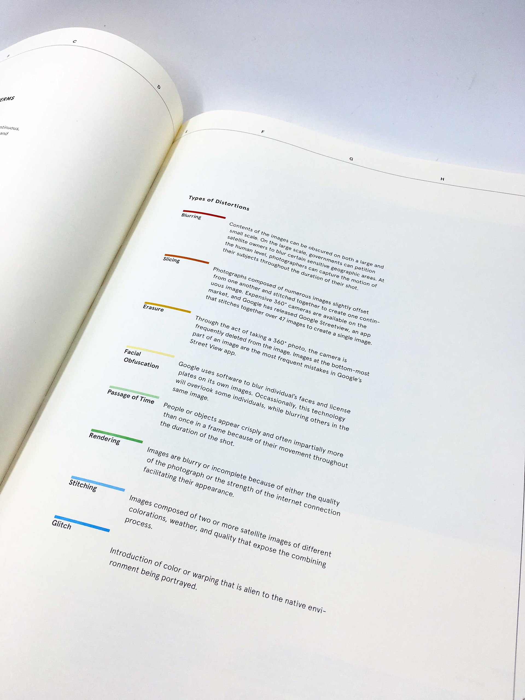
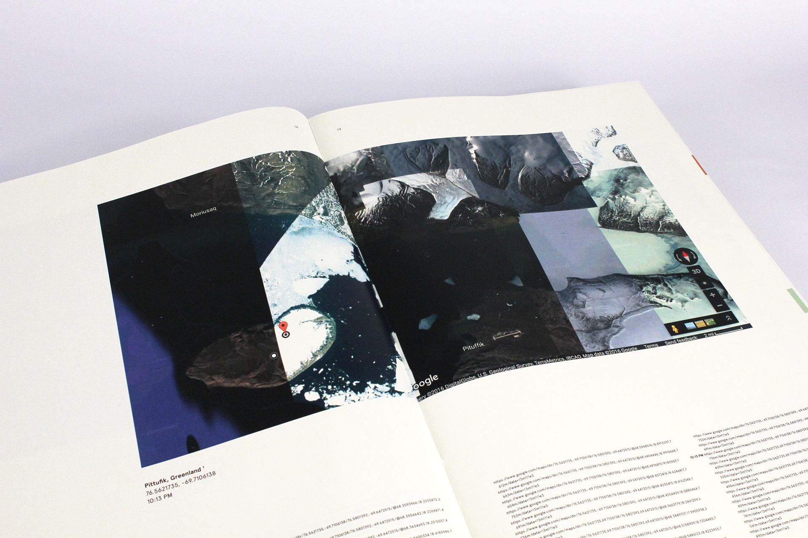
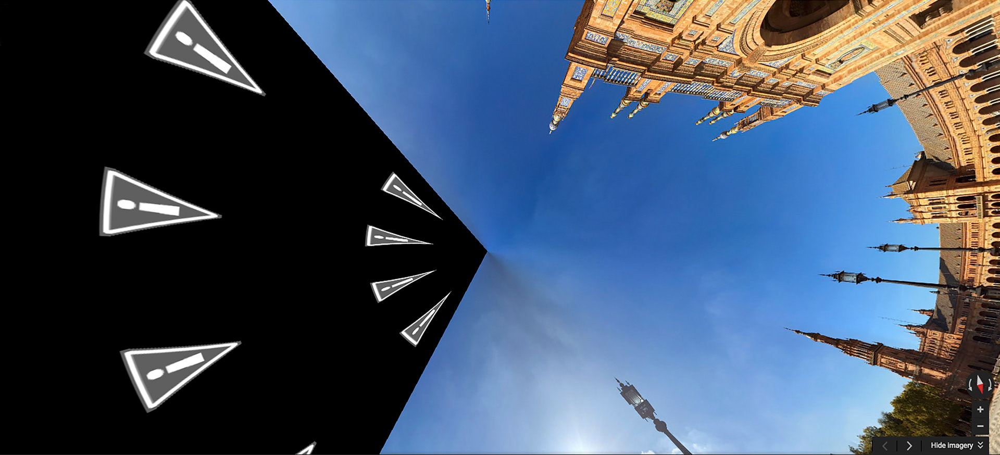
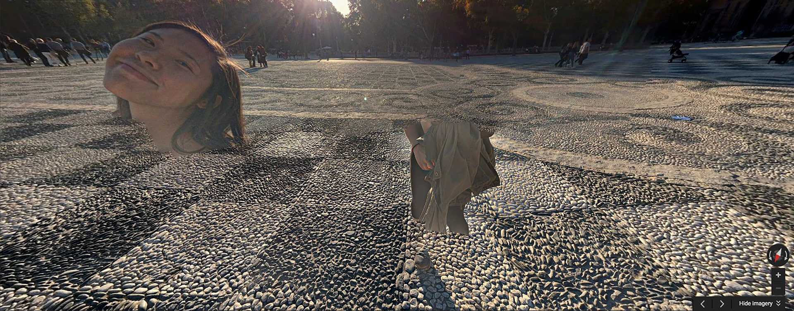
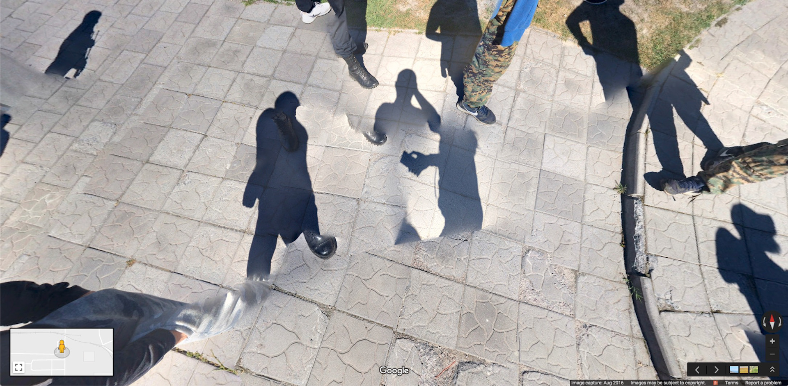
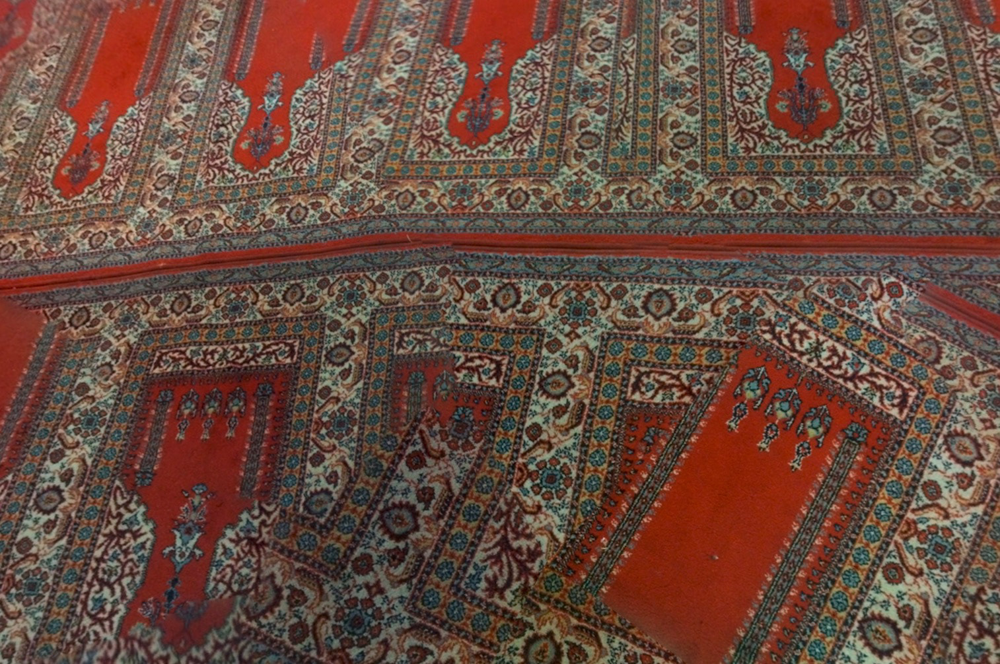
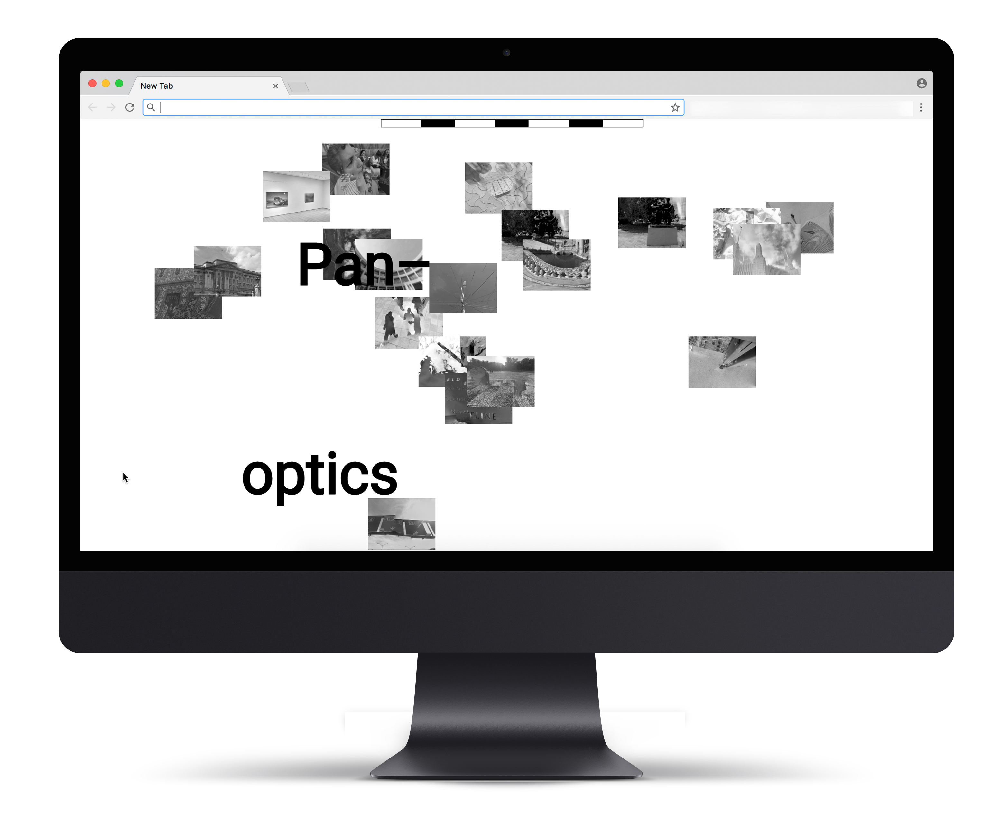

Inconsistent Google Maps
Panoptics is a book and website that collects and categorizes glitches seen throughout Google Maps. These images illustrate the human hand in the process of contemporary map-making, reminding the viewer of the inherent bias of photographic maps.
I call these images “Panoptics.” Panoptic means “to show or see the whole at one view,” and these images are unique in their honesty and ability to show a truer whole. While their neighboring images may show a more realistic representation of a space, these images show the process and creator.
Fall 2017.







